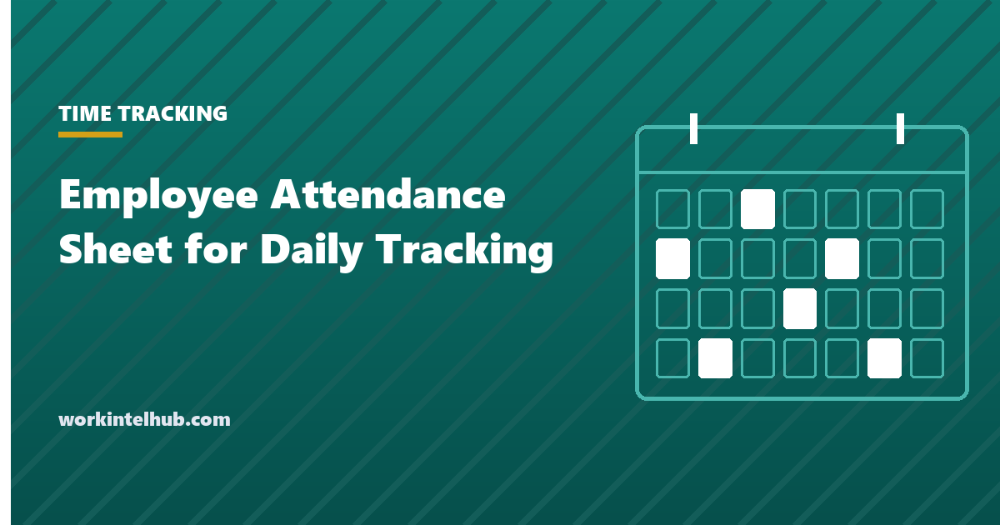

Employee Attendance Sheet for Daily Tracking

An attendance sheet is the simplest attendance system there is: names down the side, days across the top, a code in each cell. It works for a shop, a classroom, a construction crew or a thirty-person office, and for many of them it is all the system they need. The trouble starts when the sheet is the only record of hours for people paid by the hour, or when it is used to count absences that the law says cannot be counted.
The templates here are a daily sign-in sheet, a weekly attendance tracker and a monthly tracker with status codes, each totalled by employee in Excel. The page covers how to use them, which absences must never be marked against an employee, and when a sheet is no longer enough.
Download the templates
Free files: Word, Excel and PDF
Three files, free, no email required. Word to edit, Excel to track, PDF to print or share.
Templates open in Microsoft Word, Excel, Google Docs and Sheets, LibreOffice and any PDF reader. Free to use and adapt for your organisation.
What is in the templates
- Daily sign-in sheet. Time in, time out and initials per employee; the Excel version calculates hours so the sheet can feed payroll.
- Weekly tracker. A code per day with present, absent, late and leave counted per employee.
- Monthly tracker. Thirty-one days across, counted the same way.
- Status codes. Nine codes with a column that says whether each may count against attendance, which is where most sheets go wrong.
The codes that must never count
An attendance sheet is harmless until it feeds discipline. Then the code in the cell matters. Absences protected by law, including FMLA leave, ADA accommodation, military leave, jury duty, voting, and paid sick leave in the states that mandate it, cannot be counted as occurrences, and a sheet that marks them with the same "A" as an unexplained absence is the exhibit in the lawsuit. Use the F and S codes and keep the reason out of the sheet (the reason is medical information; the code is enough). The attendance policy template sets out which absences are protected in detail, and the absenteeism guide covers what to do about the pattern once protected leave is excluded.
When the sheet is also the time record
If hourly employees sign in and out on the daily sheet, it is a time record under the Fair Labor Standards Act: it must show the actual times, not the scheduled ones, it must be kept two years, and breaks must be recorded as taken, not assumed. A sheet that pre-prints 9:00 and 5:00 and asks for initials records nothing. The attendance tracking guide explains the record-keeping rules, and the timesheet templates are the better tool once hours drive pay.
When a sheet is not enough
- More than about thirty people or more than one site: a sheet stops being reviewable.
- Hourly staff with overtime or state break rules: you need times to the minute and a system that applies the rules.
- Any points-based attendance policy: the counting needs to be consistent and auditable.
- Remote or field staff: a sign-in sheet on a wall records nobody.
- The attendance software review covers the options, several of them free.
Key takeaways
- An attendance sheet is enough for small, single-site teams; the status codes decide whether it is safe.
- Protected absences get their own code and never count against an employee.
- If the sheet records hours for hourly staff, it is a legal time record: actual times, breaks as taken, kept two years.
- Move to software above about thirty people, with points policies, or with remote and field staff.
Frequently asked questions
What should an employee attendance sheet include?
Employee name, date, a status code or time in and out, and totals by employee for present, absent, late and leave. If hourly staff sign in and out on it, actual times and breaks as taken, because it becomes a time record.
Can I count sick days on an attendance sheet?
Record them, but do not count them against the employee where the sick leave is protected by state law, FMLA or the ADA. Use a separate code and keep the medical reason off the sheet.
How long do I keep attendance sheets?
Two years where they record hours for pay under federal rules, three years for payroll records, and longer in several states. Sheets used in discipline should be kept for the duration of the employee's file plus the limitation period, commonly four years.
Is an Excel attendance sheet enough for payroll?
For a small team with simple pay, yes, provided actual times and breaks are recorded and hours are calculated correctly. Once overtime, daily overtime states, shift differentials or break premiums apply, a time tracking system that applies the rules is safer.
What status codes should I use?
Present, late, unscheduled absence, sick, vacation or PTO, holiday, remote, protected leave and no-call no-show. The important distinction is between codes that may count against attendance and codes that never do.